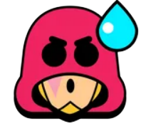
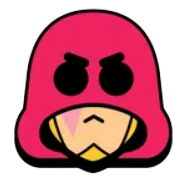
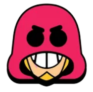
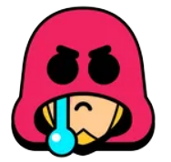
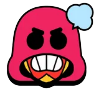
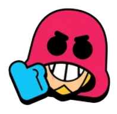
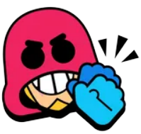
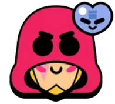
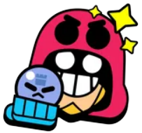

Brawler of the Day: Grom
"Watchman Grom's priority is to keep guard. He throws his trusty radio at his enemies. His Super is a big bad bomb that breaks walls and pushes back enemies!"
Grom is an Epic Brawler who could be unlocked early for a limited time by winning the Grom Challenge or can be obtained from the Starr Road. He has moderately low health and a high damage potential. He attacks by throwing his walkie-talkie over obstacles that explodes in a cross pattern upon contact.
His Super is a larger bomb that explodes into four larger projectiles in a cross pattern that can destroy obstacles and knock enemies back. His first Gadget, Watchtower, drops a watchtower that allows Grom and allies to see inside of bushes within its radius. His second Gadget, Radio Check, makes Grom's next attack throw 3 walkie-talkies. Grom’s first Star Power, Foot Patrol, boosts Grom's movement speed when his Super is charged. Grom’s second Star Power, X-Factor, increases his attack damage the farther they split.
- 
- 
- 
- 
- 
- 
- 
- 
- 
 Attack: Bud Go Boom!
Attack: Bud Go Boom!
"Grom hurls Bud, his exploding walkie-talkie! The blast moves in the shape of a cross, hurting enemies caught in its path."
Grom throws his walkie-talkie over obstacles that explodes into four piercing projectiles in a cross pattern. An enemy can only be damaged by one of the projectiles. Similarly to Spike's attack, Grom's walkie-talkie always splits perpendicularly to the map borders and the cross pattern doesn't rotate regardless of the direction Grom attacks in.
Super: Grom Bomb
"Grom launches a devastating bomb with Bud's help! The Grom Bomb inflicts huge damage, breaks walls and the force from its blast pushes all enemies backwards."
Grom throws the bomb on his back over obstacles that explodes into four piercing projectiles in a cross pattern, similarly to his main attack. The projectiles can also destroy obstacles and knock enemies back, but the projectiles can't pierce through walls after destroying them, similarly to a bullet from Colt's Super, and enemies can only be damaged by one of the projectiles.
Gadgets
Watchtower
"Grom ejects a Watchtower from his Grom Bomb that gives all allies sight into bushes over a large area. The watchtower slowly loses health over time."
Upon activation, Grom drops a turret that allows him and allies to see enemies inside bushes in the turret's radius. The turret has 1500 health, will be destroyed if Grom deploys another turret, and decays by 75 health per second until it's destroyed, lasting for up to 20 seconds if it doesn’t take any damage. Any invisible enemies like Leon or Sandy inside the turret's radius will not be revealed.
Radio Check
"Grom's next attack fires 3 Buds in rapid succession."
Activating this Gadget allows Grom's next attack to fire three walkie-talkies in quick succession. A Gadget symbol will glow above Grom's head signaling this Gadget's usage, as well as a glowing attack joystick. This Gadget's cooldown starts after this attack is shot.
Star Powers
Foot Patrol
"When Grom's Super is fully charged, he gains +15% faster movement speed!"
When Grom's Super is fully charged, his movement speed is boosted by 15%, increasing his movement speed from 720 points to 820 points and allowing Grom to move faster than most other Brawlers. The effect is lost if Grom uses his Super.
X-Factor
"The split from Grom's main attack deals up to 30% extra damage at max distance."
Grom's main attack can deal up to 30% more damage the farther they travel.
Contact
Send us some fan mail
Follow Us


Advertise
Media Kit